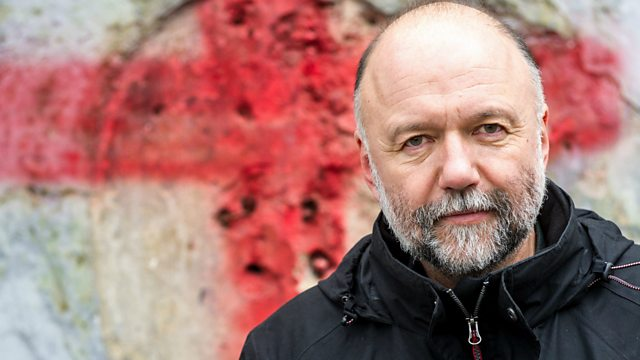

A Ukrainian novelist and the impact of writing in Russian. He's one of the country's most famous authors and supported the uprising in 2014. But, although he lives in Ukraine, he writes in Russian and because of that he's been rejected by some as a Ukrainian writer and accused of being a traitor by Russians.
"Ukrainians are individualists, egoists, anarchists who do not like government or authority. They think they know how to organise their lives, regardless of which party or force is in power in the country. If they do not like the actions of the authorities, they go out to protest. Therefore, any government in Ukraine is afraid of the street; afraid of its people. Russians loyal to their authority are afraid to protest and are willing to obey any rules the Kremlin creates. Now they are cut off from information, from Facebook and Twitter. But even before they believed the official TV channels more than the news from the internet. In Ukraine, about 400 political parties are registered with the Ministry of Justice. This only once again proves the individualism of Ukrainians. Not a single nationalist party is represented in the Ukrainian parliament. Ukrainians do not like to vote for either the extreme left or the extreme right. Basically, they are liberals at heart. In the 1920s and 1930s peasants were sent to Siberia and the Far East as a punishment for not wanting to join collective farms. Ukrainians are not collective, everyone wants to be the owner of his own land, his own cow, his own crop. Looking at this history, they can safely say: “We and the Russians are two different peoples!” Now, the Ukrainian army is successfully defending the country. Ukrainians are accustomed to freedom and value it more than stability. For Russians, stability is more important than freedom." (Andrey Kurkov's interview to Sunday Times (13 March, 2022))